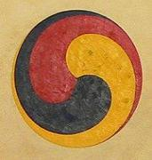
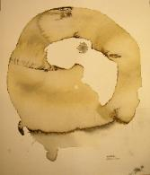

some philosophy
There is something bigger and more worthwhile than the things we see about us, the things we live by and strive for. There is an undiscovered beauty, a divine excellence, just beyond us. Let us stand on tiptoes, forgetting the nearer things and grasp what may be.
— Bernard Maybeck, 1923
the coherence way
In order to truly create, it is essential to enter “the mystery” and stay there long enough to apprehend what there is to learn. And once you can get to that inspiration, bring back something previously not yet known.
“Finding Home” is not a destination but a journey. Home is not a “place” but an ongoing search for that which makes us fully connected with our lives at the most fundamental and profound levels.
I have come to understand that all things around us are amazingly complex, beautiful and complete structures. The other day I saw an insect no bigger than the pointed tip of a pin moving remarkably fast across the floor. It was so small that I could see it only because I had on some strong magnifying glasses. I was stunned to think that this tiny thing was so complete, whole and self-contained that it too was like us humans, perfect enough to be alive, self-sustaining, and fully functioning. That bug was truth manifest. I realized that insect, and you and I, are each a complete manifestation of that same truth. If we were not so complete, whole and true we would simply not exist at all. Understanding that we are truth is also an understanding that what we create, as humans, often falls far short of what is naturally inherent in the simplest, most tiny, seemingly insignificant things in our world. We as a species have created the 747 that flies with five hundred souls on board…….. but still cannot create a single blade of grass.
This is humbling to be sure and also inspiring. There are many examples of human endeavors getting things right and whole from a Van Gogh painting of a chair to the East Wing of the National Museum, and to what I like to think, some of my own projects. Endeavors where the conditions for “wholeness” are possible and in “wholeness” we experience “oneness.”
Of course the tiny insect, you, me, a 747, a blade of grass and the East Wing of the National Museum are NOT independent and self-sustaining ever. All of it, all of us, ultimately are attached to and sustained by this planet Earth. And as such, this interdependence, this selfsame “oneness” is the truth of our existence. When nature succeeds in creating anything that is living, it is essentially creating an extension, an elaboration on the truth of this “oneness” that we all are. You and I as creators will use the same truth to make our creations live. This is what is absolutely magical, beautiful and amazingly satisfying about “creating” rather than just “making.”
My unique understanding and set of skills stem from this predilection towards “oneness,” and of a profound attention to detail with which I endeavor to imbue every life giving space with light, love and energy. By helping to bring together the many dimensions of my client’s values, vision, dreams, aesthetics, purpose and lifestyles, together we establish a set of guiding principles which allow us to approach the design process in a holistic, interdisciplinary way, integrating land planning, architecture, interior design and landscaping tailored to fit my client’s desires and requirements, exactly.
gankyil

The Gankyil, or ‘Wheel of Joy’, can clearly be seen to reflect the inseparability and interdependence of all the groups of three in the Dzogchen teaching, but perhaps most particularly it shows the inseparability of the Base, the Path, and the Fruit. And since Dzogchen, the Great Perfection, is essentially the self-perfected indivisibility of the primordial state, it naturally requires a non-dual symbol to represent it.
— Norbu & Shane, The Crystal and the Way of Light
enso

Enso is a Japanese word meaning “circle” and a concept strongly associated with Zen. Enso is one of the most common subjects of Japanese calligraphy even though it is a symbol and not a character. It symbolizes the Absolute, enlightenment, strength, elegance, the Universe, and the void; it can also symbolize the Japanese aesthetic itself. As an “expression of the moment” it is often considered a form of minimalist expressionist art.
In Zen Buddhist painting, enso symbolizes a moment when the mind is free to simply let the body/spirit create. The brushed ink of the circle is usually done on silk or rice paper in one movement and there is no possibility of modification: it shows the expressive movement of the spirit at that time.
Some artists paint enso with an opening in the circle, while others complete the circle. For the former, the opening may express various ideas, for example that the enso is not separate, but is part of something greater, or that imperfection is an essential and inherent aspect of existence. The principle of controlling the balance of composition through asymmetry and irregularity is an important aspect of the Japanese aesthetic: Fukinsei, the denial of perfection.